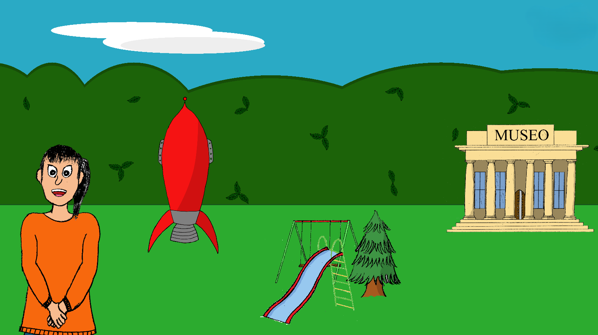

Fernando Rubio
Aprende con Ines
This is the first videogame I developed. It's an university project that aims to be a game for kids of ages between 3-6 years.
The project required research in order to adapt the game to the infants' capabilities, so I followed the laws of Early Childhood Education and adjusted the gameplay to them.
Since this was an individual project, my responsibilities were everything involving the game:
- The gameplay of all 3 minigames.
- Programming everything, done in Unity with C#.
- The UI and its functionality.
- The art, which was done with Unity tools, public domain images and by hand, using Photoshop to import them.
- The audio, for which I used public domain AI generated voice to record every line the character says in-game.
I recently uploaded it to itch.io for anyone to play it. Here's the link
About the game
You meet your friend Ines in your backyard. She offers you to go play with her to 3 different places: you can go to the museum to see paintings and learn their names; you can go to the park to learn english; or your can even go to space to learn to add.